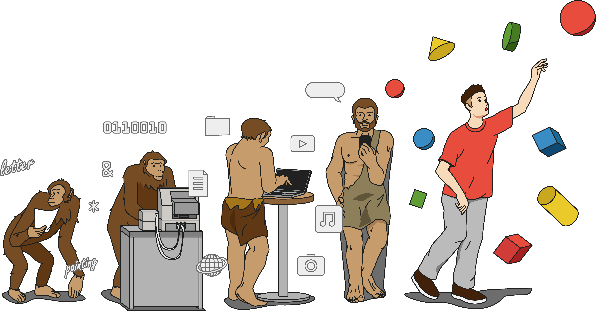
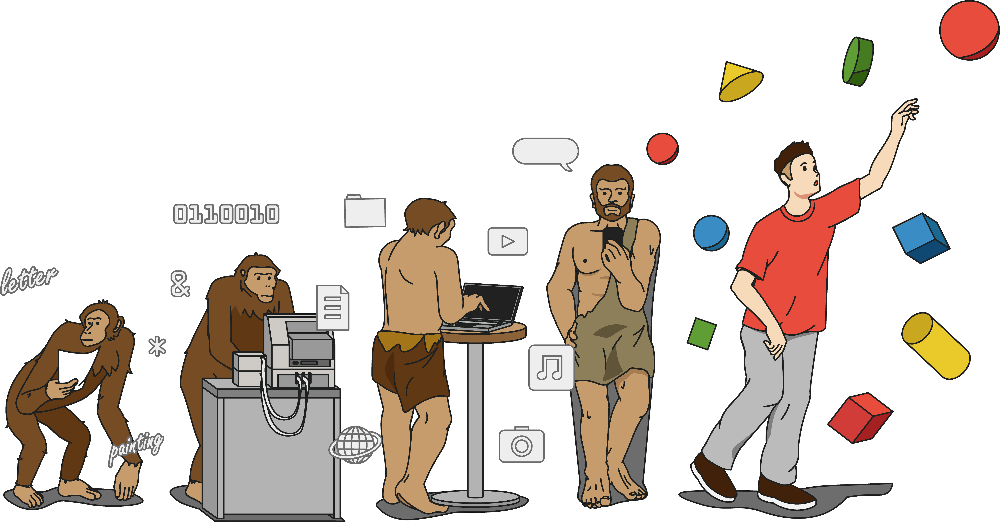

3Dは、エンタメコンテンツにとどまらず、個人の自己表現やライフスタイルを拡張し産業さえも激変させる、未来のインフラとなるテクノロジーだ。
そしてその根底にあるのは「伝達」の革新だと私たちは思う。
これまで人類は、言語を獲得し洗練させることで伝達を果たしてきたが、文字や画像などの2Dでは、表現の自由さや効率に限界がある。
3Dはより高度な伝達手段としてビジュアルを通じて、直感的なコミュニケーションを可能にする。それは、人類にとってのあらたな「言語」だ。
私たちは、独自の3Dマークアップ言語『OML』の開発や多様なコンテンツを一元管理できるツールによって、誰もが3Dを身近に扱えるような社会的インフラを構築する。
そして3Dを通じて「言語」に歴史的な変化をもたらし、すべての情報がよりスマートに行き交うあらたな社会を引き寄せていく。
 
